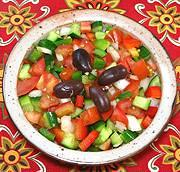

|
Pipirrana SaladSpain - Southern - Pippirrana | ||||
| Serves: Effort: Sched: DoAhead: |
7 salad ** 1-1/10 hrs Most |
This is a very popular salad in southern Spain. Not only is it delicious, but it is durable on the buffet table because it contains no greens likely to wilt. | |||
|
|
6 6 12 10 4 2 ------ 4 6 1/3 1/4 ------ 12 |
oz oz oz oz oz cl --- T T t t --- |
Bell Pepper, red Bell Pepper, grn Tomato Cucumber (1) Onion, white Garlic -- Dressing Sherry Vinegar (2) Olive Oil ExtV Salt Pepper -- Garnish Olives, Black (3) |
The recipe makes a little over 2 pounds, and can be made ahead up to dressing. Salad - (25 min + 30 min chill)
|
dgv_pipir1 141206 inet - www.clovegarden.com
©Andrew Grygus - agryg@clovegarden.com - Linking to
and non-commercial use of this page permitted